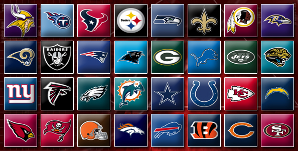
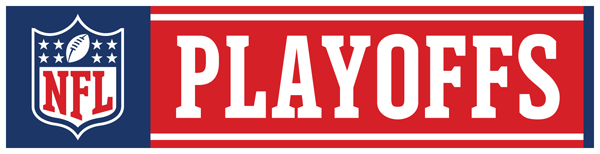

Organisation du championnat NFL
En premier lieu, il faut savoir que les équipes sont divisées en divisions et conférences.
Il existe 2 conférences, la NFC et l’AFC qui disposent de 16 équipes chacune. A la base, ces deux groupes étaient deux championnats
distincts (NFL et AFL) ayant fusionné à la fin des années 60. Les champions de chaque conférence se rencontrent pour le match final qu’est
le Super Bowl.
Les équipes de la NFC et de l'AFC

Ces deux conférences sont subdivisées en quatre divisions chacune (Nord, Sud, Est, Ouest). Remporter le titre de sa division est le
premier objectif d’une saison, car il qualifie automatiquement une équipe pour les playoffs, la seconde partie de la saison.
SAISON REGULIERE
Après la draft, les camps d’entrainement et les 4 matchs de pré-saison, vient le moment de la saison régulière.
La saison régulière dure 17 semaines au cours desquelles chaque équipe dispute 16 matchs. Chaque équipe dispose donc d’une semaine de repos
au cours de la saison régulière. Au cours d’une saison, une équipe rencontre deux fois les autres équipes de sa division. Elle rencontre
aussi les équipes d’une division de sa conférence associée à sa division pour la saison. Par exemple, toutes les équipes de la NFC Est
rencontreront une fois les équipes de la NFC Nord. Chaque division se voit également associée à une division de la conférence opposée. Par
exemple, toutes les équipes de la NFC Est rencontreront une fois les équipes de l’AFC Sud. Les deux autres matchs opposent l’équipe aux
clubs de la même conférence ayant terminé à la même place la saison précédente (1er contre 1er, 2e contre 2e etc).
Par exemple, en 2009, les Green Bay Packers ont rencontré deux fois les équipes de leur division NFC Nord (Bears, Vikings et Lions) soit
6 matchs. Une fois les équipes de la NFC Ouest (Cardinals, Seahawks, 49ers, Rams), une fois les équipes de l’AFC Nord (Steelers, Browns,
Ravens, Bengals) ainsi que les Cowboys et les Buccaneers. Soit un total de 16 matchs. Le compte en bon.
PLAY OFFS
Douze équipes (6 par conférence) sont qualifiées pour les play-offs, tournoi final à élimination directe. Dans chaque conférence, il
s’agit des 4 champions de division, plus les deux meilleures équipes. En cas d’égalité au nombre de victoires, les critères de départage
sont nombreux, mais contrairement à d’autres sports, le goal-average n’est pas un critère prioritaire. Le premier tour (wild card) voit le
3e meilleur champion accueillir la moins bonne des non championnes, et le 4e champion accueille la meilleure des non championnes. Les
vainqueurs passent au second tour (conference demi-finals) affronter les équipes les mieux classées qui ont bénéficié d’une semaine de
repos. Les gagnants se rencontrent lors des finales de Conférence. Enfin, les champions de Conférence se rencontrent, en terrain neutre,
pour le Super Bowl.

PRO BOWL
C’est l’équivalent du All Star Game de la NBA ou NHL. Le public vote pour les titulaires des équipes de la NFC et AFC, les coachs
choisissent les remplaçants. Le match se joue en général une semaine après le Super Bowl à Hawaï dans la détente et la bonne humeur. Des
changements dans les dates pourraient avoir lieu. Pour un test en 2010, le Pro Bowl a été joué dans la semaine précédant le Superbowl à
Miami. Etre un « Pro Bowler », c’est un honneur qui figure en bonne place sur le CV d’un joueur. Le Pro Bowl marque la fin de la saison et
le début d’une longue attente de la saison à venir…